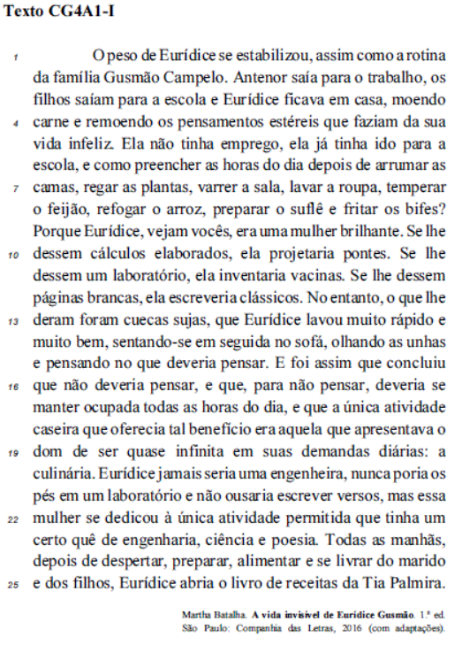

1º Desafio
Questão 2/10:
(TJ PA/ Auxiliar judiciário – CESPE/Cebraspe – 2020)
A correção gramatical e o sentido original do texto CG4A1-I seriam preservados caso:
I. Os dois-pontos imediatamente após “diárias” (R.19) fossem substituídos por uma vírgula.
II. O vocábulo estéreis (R.4) fosse substituído por desnecessários.
III. Se inserisse, no trecho “nunca poria os pés em um laboratório e não ousaria escrever versos” (R.20 e 21), uma vírgula após “laboratório” e o vocábulo “não” fosse substituído por nem.
Assinale a opção correta:
(a) Nenhum item está certo. (b) Apenas o item II está certo. (c) Apenas o item I está certo. (d) Apenas o item III está certo. (e) Todos os itens estão certos.